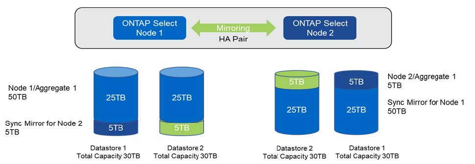

Demander de modifier un document
Demander de modifier un document Modifier sur GitHub
Modifier sur GitHub Guide des contributeurs
Guide des contributeursAugmentation de la capacité de stockage
Contributeurs
ONTAP Deploy peut être utilisé pour ajouter et obtenir une licence de stockage supplémentaire pour chaque nœud d’un cluster ONTAP Select.
La fonctionnalité d’ajout de stockage de ONTAP Deploy est la seule façon d’augmenter la gestion du stockage, et la modification directe de la machine virtuelle ONTAP Select n’est pas prise en charge. La figure suivante montre l’icône "+" qui lance l’assistant d’ajout de stockage.

Les considérations suivantes sont importantes pour la réussite de l’opération d’extension de capacité. L’ajout de capacité requiert la licence existante pour couvrir la quantité totale d’espace (existant plus nouveau). Une opération d’ajout de stockage entraînant une défaillance du nœud dépassant sa capacité sous licence. Une nouvelle licence ayant une capacité suffisante doit être installée en premier.
Si la capacité supplémentaire est ajoutée à un agrégat ONTAP Select existant, le nouveau pool de stockage (datastore) doit présenter un profil de performances similaire à celui du pool de stockage existant. Notez qu’il n’est pas possible d’ajouter un stockage non-SSD à un nœud ONTAP Select équipé d’une personnalisation semblable à l’AFF (Flash activé). Le mélange de DAS et de stockage externe n’est pas également pris en charge.
Si du stockage connecté localement est ajouté à un système afin de fournir des pools de stockage locaux (DAS) supplémentaires, vous devez créer un groupe RAID et une LUN (ou LUN) supplémentaires. Tout comme pour les systèmes FAS, il convient de s’assurer que les performances du nouveau groupe RAID sont similaires à celles du groupe RAID d’origine si vous ajoutez de l’espace au même agrégat. Si vous créez un nouvel agrégat, la nouvelle disposition des groupes RAID peut être différente si l’on comprend parfaitement les implications de performances du nouvel agrégat.
Le nouvel espace peut être ajouté au même datastore, dans la mesure où la taille totale du datastore ne dépasse pas la taille maximale du datastore prise en charge par ESX. L’ajout d’une extension au datastore dans lequel ONTAP Select est déjà installé peut s’effectuer de façon dynamique et n’affecte pas les opérations du nœud ONTAP Select.
Si le nœud ONTAP Select fait partie d’une paire HA, d’autres problèmes doivent être pris en compte.
Dans une paire haute disponibilité, chaque nœud contient une copie en miroir des données de son partenaire. L’ajout d’espace au nœud 1 requiert qu’une quantité d’espace identique soit ajoutée à son partenaire, le nœud 2, de sorte que toutes les données du nœud 1 soient répliquées vers le nœud 2. En d’autres termes, l’espace ajouté au nœud 2 dans le cadre de l’opération d’ajout de capacité pour le nœud 1 n’est pas visible ou accessible sur le nœud 2. L’espace est ajouté au nœud 2 afin que les données du nœud 1 soient entièrement protégées lors d’un événement HA.
Il y a une considération supplémentaire en ce qui concerne la performance. Les données du nœud 1 sont répliquées de manière synchrone sur le nœud 2. Par conséquent, les performances du nouvel espace (datastore) sur le nœud 1 doivent correspondre aux performances du nouvel espace (datastore) sur le nœud 2. En d’autres termes, l’ajout d’espace sur les deux nœuds, mais l’utilisation de technologies de disque différentes ou de tailles de groupe RAID différentes, peut entraîner des problèmes de performances. Cela est dû à l’opération RAID SyncMirror utilisée pour conserver une copie des données sur le nœud partenaire.
Pour augmenter la capacité accessible par l’utilisateur sur les deux nœuds d’une paire haute disponibilité, deux opérations d’ajout de stockage doivent être effectuées, une pour chaque nœud. Chaque opération d’ajout de stockage requiert de l’espace supplémentaire sur les deux nœuds. L’espace total requis sur chaque nœud est égal à l’espace requis sur le nœud 1 et à l’espace requis sur le nœud 2.
La configuration initiale est effectuée avec deux nœuds. Chaque nœud dispose de deux datastores avec 30 To d’espace dans chaque datastore. ONTAP Deploy crée un cluster à deux nœuds dont chaque nœud consomme 10 To d’espace dans le datastore 1. ONTAP Deploy configure chaque nœud avec 5 To d’espace actif par nœud.
La figure suivante présente les résultats d’une opération d’ajout de stockage pour le nœud 1. ONTAP Select utilise toujours la même quantité de stockage (15 To) sur chaque nœud. Cependant, le nœud 1 dispose d’un stockage plus actif (10 To) que le nœud 2 (5 To). Les deux nœuds sont entièrement protégés car chaque nœud héberge une copie des données de l’autre nœud. Il reste de l’espace libre supplémentaire dans le datastore 1 et le datastore 2 reste totalement libre.
Distribution de la capacité : allocation et espace libre après une seule opération d’ajout de stockage

Deux opérations d’ajout de stockage supplémentaires sur le nœud 1 utilisent le reste du datastore 1 et une partie du datastore 2 (avec le cache de capacité). La première opération d’ajout de stockage utilise 15 To d’espace libre dans le datastore 1. La figure suivante présente le résultat de la seconde opération d’ajout de stockage. À ce stade, le nœud 1 gère 50 To de données actives, tandis que le nœud 2 en contient les 5 To d’origine.
Distribution de la capacité : allocation et espace libre après deux opérations supplémentaires d’ajout de stockage pour le nœud 1

La taille maximale de VMDK utilisée lors des opérations d’ajout de capacité est de 16 To. La taille VMDK maximale utilisée lors des opérations de création de clusters continue d’être de 8 To. Le déploiement de ONTAP crée des VMDK correctement dimensionnés en fonction de votre configuration (cluster à un ou plusieurs nœuds) et de la capacité ajoutée. Cependant, la taille maximale de chaque VMDK ne doit pas dépasser 8 To lors des opérations de création du cluster et 16 To lors des opérations d’ajout de stockage.
Augmentation de la capacité du ONTAP Select avec le RAID logiciel
De la même manière, l’assistant d’ajout de stockage permet d’augmenter la capacité de gestion des nœuds ONTAP Select grâce au RAID logiciel. L’assistant ne présente que les disques SSD DAS disponibles et peut être mappé en tant que RDM à la machine virtuelle ONTAP Select.
Bien qu’il soit possible d’augmenter la licence de capacité d’un seul To, lorsque l’on travaille avec le RAID logiciel, il n’est pas possible d’augmenter physiquement la capacité de un seul To. Tout comme l’ajout de disques à une baie FAS ou AFF, certains facteurs déterminent la quantité minimale de stockage que vous pouvez ajouter en une seule opération.
Notez que dans une paire haute disponibilité, l’ajout de stockage au nœud 1 requiert qu’un nombre identique de disques soit également disponible sur la paire haute disponibilité du nœud (nœud 2). Les disques locaux et distants sont utilisés par une opération d’ajout de stockage sur le nœud 1. C’est-à-dire que les disques distants sont utilisés pour s’assurer que le nouveau stockage du nœud 1 est répliqué et protégé sur le nœud 2. Pour ajouter du stockage utilisable localement sur le nœud 2, une opération d’ajout de stockage distincte et un nombre de disques distinct et égal doivent être disponibles sur les deux nœuds.
ONTAP Select partitionne les nouveaux disques dans les mêmes partitions racine, de données et de données que les disques existants. L’opération de partitionnement se déroule pendant la création d’un nouvel agrégat ou pendant l’extension sur un agrégat existant. La taille de la bande de partition racine sur chaque disque est définie pour correspondre à la taille de partition racine existante sur les disques existants. Par conséquent, chacune des deux tailles de partition de données identiques peut être calculée comme la capacité totale du disque moins la taille de la partition racine divisée par deux. La taille de bande de la partition racine est variable et est calculée au cours de la configuration initiale du cluster comme suit. L’espace racine total requis (68 Go pour un cluster à un seul nœud et 136 Go pour les paires HA) est divisé en différents disques moins de disques de secours et de parité. La taille de bande de la partition racine est maintenue constante sur tous les lecteurs ajoutés au système.
Si vous créez un nouvel agrégat, le nombre minimal de disques requis varie en fonction du type RAID et si le nœud ONTAP Select fait partie d’une paire HA.
Si vous ajoutez du stockage à un agrégat existant, certaines considérations supplémentaires sont nécessaires. Il est possible d’ajouter des disques à un groupe RAID existant, en supposant que le groupe RAID n’est pas à la limite maximale déjà. Les meilleures pratiques traditionnelles FAS et AFF pour l’ajout de piles de disques aux groupes RAID existants s’appliquent également ici, et la création d’un point fort sur la nouvelle pile de disques peut être un problème. En outre, seuls les disques de taille égale ou supérieure des partitions de données peuvent être ajoutés à un groupe RAID existant. Comme expliqué ci-dessus, la taille de la partition de données n’est pas la même que la taille brute du lecteur. Si les partitions de données ajoutées sont supérieures aux partitions existantes, les nouveaux disques sont de bonne taille. En d’autres termes, une partie de la capacité de chaque nouveau disque reste inutilisé.
Il est également possible d’utiliser les nouveaux disques pour créer un nouveau groupe RAID dans le cadre d’un agrégat existant. Dans ce cas, la taille du groupe RAID doit correspondre à la taille du groupe RAID existant.